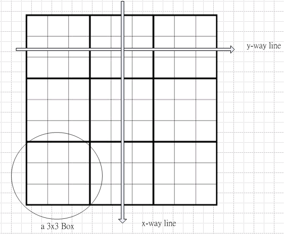
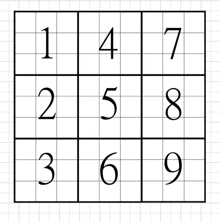
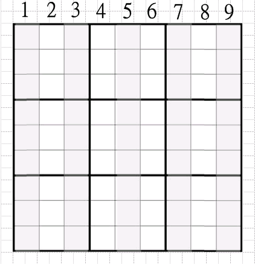
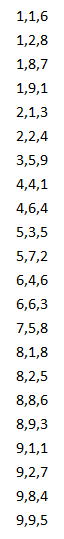
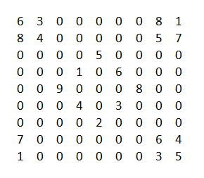
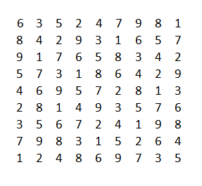

如何在 Python 中製作一個解數獨的模擬環境?¶
我們認為, 類別定義, 是在OOP程式設計中最困難的部分. 所以在這些課程中, 我們不準備詳細地解釋如何設計類別, 屬性與方法. 我們只會解說在這個程式庫中既有的類別, 屬性與方法. 所以我們可以類比這些類別, 屬性與方法所構成的資料結構是一個解決數獨的模擬環境, 以便讓學習者以人的思考模式來學習如何解開一個數獨.
首先, 我們可以想像在一個美麗的山谷中, 有 9x9 間方方正正的房子, 它們排列如下:
一個假想的聯合王國
這裡有 9 個國家, 每一個國家有 9 個人, 他們決定一起定居在這個美麗的山谷. 而這個山谷共有 9x9 間房子. 他們決定每一排(x-way line), 每一列(y-way line), 及每一個 3x3 區塊都包含了每一個國家的人. 如此, 他們才會認為他們這個團體才是一個真正的聯合王國, 可以永久和平地生活在一起. 你可以幫助他們達到這個目的嗎?
接著, 我們就可以開始協助這些人來促成這一個美好的世界...
甚麼是類別? 甚麼是物件?¶
在OOP中，類別(class)的定義是主角。它就如同人類j為了探索、溝通或者紀錄等目的，會將有同樣行為、特性與外表的事物歸類一樣。如同我們會將動物當作一類，而大象就是動物類別的一個子類別，一隻大象就是同屬於動物及大象這兩類的一個物件。
雖然在自然上，一隻大象這個物件同時隸屬於大象類及動物類，但看目標的需要，也可以直接將一隻大象當做動物類別的一個物件即可。所以我們可以說在 OOP 所說的物件(Object)就是我們現實世界的一個實體，就如同人類若是一個類別，那你就是隸屬此類別的一個唯一獨立的物件。
依據我們設定的範圍與需要，我們可能設計出不同的類別，而讓同一個物件同時隸屬於它們。如我們想要研究城市生態時，我們可能會設計一個 animal 類別，而這個類別中的物件包括一些人，一些寵物等等...但當我們想要製作一個電話簿程式時，那我們就會設計一個 person 類別，一些人會成為此類別的物件，但不會包括寵物，除非這些寵物也都擁有手機。
在這個專案中，我們設計的主要類別有:
Number Class:
我們可以視數獨遊戲中每個數字是一個人。而整個數獨世界中有 9 個國家，每個國家有 9 個人。如此，這個 Number Class 就可以視為是一個國家類別。每一個國家都有一個識別代碼(ID)，在這裡是 1-9，而每個國家都會紀錄它的人民住在這山谷中的位置。
Point Class:
Point 物件就是一間房子。 每間房子都會標註它是否已住人，如果已住人，那是哪個國家的人民；如果是空的，那可以讓哪些國家的人民來申請入住？
GroupBase Class:
GroupBase是一種群組類別，也就是它的物件不是一個實體，而是一群實體的組合。在這裡的 GroupBase 包含了三種群組，X 與 Y 軸方向的房子群組及區塊房子群組。 每個物件都將指出它包含了哪些房子，已經住了多少人，還有哪些國家的人民還沒住進來？
Box Class:
它是GroupBase的子類別，為區塊群組。在數獨世界中總共有 9 個區塊物件，從左到右，從上到下，被標註其區塊代碼如下:
lineX Class:
這是 GroupBase 子類別，為 X 軸的房子群組。在數獨世界中共有 9 個物件，從左到右被標註 1-9，如下圖:
lineY Class:
這是 GroupBase 子類別，為 Y 軸的房子群組。在數獨世界中共有 9 個物件，從上到下被標註 1-9，如下圖:

Matrix Class:
Matrix class定義了數獨遊戲的整個世界。它是一個美麗的山谷，包含了 9 個國家的人民，每一個國家有 9 個人，山谷中建造了 9x9 間房子以提供給這些人民來居住，以組成一個永遠和平的聯合王國。
甚麼是屬性(Property)？¶
屬性(Property)是在類別(Class)的定義裡面，類別用它來定義成員，特徵及紀錄狀況。如在一個人的類別裡面可能會包含以下一些屬性: 這人擁有多少錢、他有幾個小孩子、第一個小孩是男或是女、每個小孩各是幾歲?
以下是這個專案中幾個主要類別的主要屬性定義:
Number class:
v: 這個國家的代碼, 1-9
p: 這個國家每一個人民所居住的房子列表
filled: 有多少人已經住進房子了
Point class:
x: 這個房子的 x 軸座標
y: 這個房子的 y 軸座標
v: 這個房子居住了哪個國家的人民，如果是空的，那它的值就是 0
b: 這個房子隸屬哪個區塊
GroupBase class:
idx: 這個群組的代碼
p: 隸屬這個群組的房子列表
filled: 在這個群組裡面已經居住了多少人
possilbe: 在這個群組裡面還有哪些國家還沒住進來，值為這些國家的代碼列表
Box class:
包含所有 GroupBase 的屬性
effects: 這個區塊的所有鄰居區塊
effectsX: 這個區塊的 x 軸方相鄰居
effectsY: 這個區塊的 y 軸方相鄰居
lineX class:
與 GroupBase 的屬性相同
lineY class:
與 GroupBase 的屬性相同
Matrix class:
p: 一個二階陣列的房子列表，從 p[0][0] 到 p[8][8]，代表這個山谷的所有房子。
lineX: x 軸方向房子群組的列表
lineY: y 軸方向房子群組的列表
b: 區塊房子群組的列表
n: 所有國家的列表
filled: 紀錄已經有多少人入住在這個山谷了
甚麼是方法(Method)？¶
方法(methods)是一個類別及其物件的一些特定行為。舉個例子，如果我們定義了一個收音機類別，它將包含一些按鈕的屬性，而當我們按下這些按鈕時，我們就必須定義一些方法來執行這個動作。這些動作有可能是開始接收某個電台的節目、或者是錄製節目到CD等等...
以下是這個專案中的類別中使用道的主要方法:
Number class:
setit(p1): 當有人找到屬於自己的房子時，就會啟動這個方法
Point class:
can_see(p1): 測試一個房子是否能夠**看到**另外一個房子(p1)?
can_see_those(posList): 測試一個房子能否**看見** posList 所列的房子，並將所有能看見的房子列表傳回。
註解
甚麼是「看見」？
對一個房子而言，與它同一排、同一列、或者同在一個區塊的其他房子，都是它能夠**看見**的房子。
GroupBase class:
allow(v): 測試一個房子群組能否讓標記為 v 的國家人民來居住？
get_num_pos(v): 在這個房子群組中，取得 v 國人民居住的房子物件，如果該國尚未有人入住，則以None來回應。
count_num_possible(count): 在一個房子群組中，取得國家的id及可供該國人民居住的房子列表，如果有參數 count，則表示要取得的可供居住的房子數要等於 count 才取回。
get_all_pos(method): 如果 method = “a”， 取得一個房子群組的所有房屋物件列表；如果 method=”u”，則取得所有空房列表；如果 method=”s”，則取得所有已住人的房子列表。
Box class:
所有 GroupBase 類別的方法
get_group_number(num): 測試這個國家代碼 num 在一個房子區塊中能否形成一個 虛擬國民？
註解
甚麼是「虛擬國民」？
虛擬國民存在於一個房子區塊群組中。在一個區塊中尚未有人入住的房子中，如果所有可能讓某個國家居住的房子在同一個方向時(無論是 x 軸或 y 軸)，那我們就可以稱這些房子形成了一個**虛擬國民**。雖然我還不曉得在這個區塊中，這個國家的人民最後將居住在哪裡，但我們從虛擬國民中知道，在與它同個方向的其他區域的房子，都將不允許居住這個國家的人民了。
lineX class:
與 GroupBase 有相同的方法
lineY class:
與 GroupBase 有相同的方法
Matrix class:
get_all_pos(method): 如果 method = “a”， 取得所有房屋物件列表；如果 method=”u”，則取得所有空房列表；如果 method=”s”，則取得所有已住人的房子列表。
sort_unassigned_pos_by_possibles(possibles): 取得所有的空房列表，而這些空房數必須僅能夠讓 possibles 個國家的人入住，如果 possibles == 0, 將取得全部空房。回應回來時將以可居住國家數 ，從小排到大。
can_see(p0, method=”u”, num=0): 取得能夠看見某一房子(p0)的房子列表，如國 num!=0，表示僅取得可讓國家代碼為 num 者居住的房子。
setit(x, y, v): 讓國家代碼為 v 的人民安住在座標為(x, y)的房子。
reduce(x, y, v): 當一個房子(x, y)被入住時，任何能夠看見此房子的其他空房，都可用此方法來減掉已入住這個國家人民(v)的可能性。
allow(x, y, v): 測試這個國家(v)的人民是否能夠居住於座標(x, y)的房子？
read(file): 從一個定義檔(file)中讀入最初到此山谷的國家、人民與居住位置。
數獨遊戲定義檔案¶
你能夠定義數獨遊戲的最初狀況。在文字檔中一行定義一個房子的座標及居住者，格式為x, y, v，如下圖，此專案附有一些已定義好的數獨，置於 [安裝的目錄]/sudoku/data/ 目錄裡。
| m3.data | 起始的數獨外觀 |
已解的數獨外觀 |
|---|---|---|
|  |  |  |